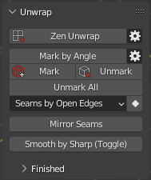
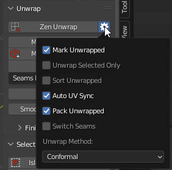
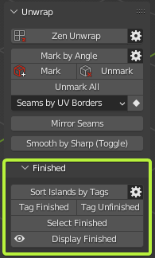

Unwrap
Panel

Zen Unwrap 
Mark selected edges/faces as Seams and/or Sharp edges and Unwrap by Marked edges after.
Preferences

-
Mark Unwrapped - Mark edges or face borders as Seams and/or Sharp edges after the Zen Unwrap operation.
-
Unwrap Selected Only - Separate workflow where only Selected Faces will be Unwrapped. It includes warnings and Unwrapping options if nothing is selected.
-
Tag Unwrapped - Tag Unwrapped Islands as Finished after Zen Unwrap operation.
-
Sort Unwrapped - Sort Islands by Tags after Zen Unwrap operation. Finished Islands move to the right side from Main UV Tile, Unfinished — to the left.
-
Auto UV Sync - Automatically Activate UV Sync Selection Mode in UV Editor for Zen Unwrap operation.
-
Pack Unwrapped - Execute Pack after Zen Unwrap operation.
-
Unwrap Method
- Conformal
- Angle Based
Mark System
Panel

Mark by Angle
- Mark edges as Seams and/or Sharp edges by Angle.
Preferences
 - Use Global Mark Settings - In this mode, all the operators from the Mark System use the settings below. If off, every operator uses its own settings.
- Mark Seams - Automatically assign Seams
- Mark Sharp Edges - Automatically assign Sharp edges
- Use Global Mark Settings - In this mode, all the operators from the Mark System use the settings below. If off, every operator uses its own settings.
- Mark Seams - Automatically assign Seams
- Mark Sharp Edges - Automatically assign Sharp edges
Mark 
- Mark selected edges or face borders as Seams and/or Sharp edges.
Unmark 
- Unmark selected edges or face borders as Seams and/or Sharp edges.
Unmark All
- Remove all the Seams and/or Sharp edges from the mesh.
Conversion System
Panel

Seams by UV Borders
- Mark Seams by existing UV Borders.
Sharp by UV Borders
- Mark Sharp by existing UV Borders.
Seams by Sharp Edges
- Mark Seams by existing Sharp edges.
Sharp Edges by Seams
- Mark Sharp edges by existing Seams.
Seams by Open Edges
- Mark Seams by Open Edges. The way that looks in the viewport.
Mirror Seams
- Mirror Seams by axes.
Smooth by Sharp (Toggle)
- Toggle between Auto Smooth 180° (with sharp edges) and regular smooth modes.
Finishing System
Panel

Sort Islands by Tags
- Finished Islands move to the right side from Main UV Tile, Unfinished — to the left.
Preferences

- Pin Finished - Pin Islands after Tag Finished operation.
- Auto Sort Islands - Automatically Sort Islands by Tags. Finished Islands move to the right side from Main UV Tile, Unfinished — to the left
- Finished Color - Finished Islands viewport display color.
- Unfinished Color - Unfinished Islands viewport display color.
Tag Finished
- Tag Islands as Finished.
Tag Unfinished
- Tag Islands as Unfinished.
Select Finished
- Select Islands tagged as Finished.
Display Finished (Toggle)
- Display Finished/Unfinished Islands in the viewport.